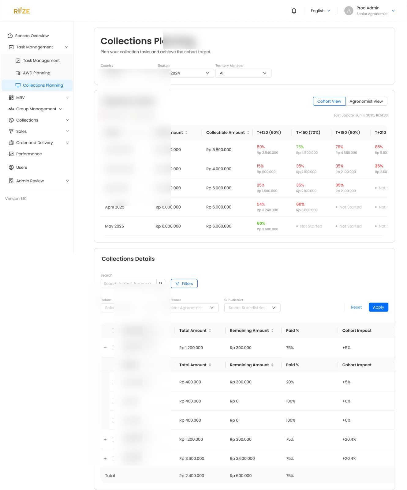
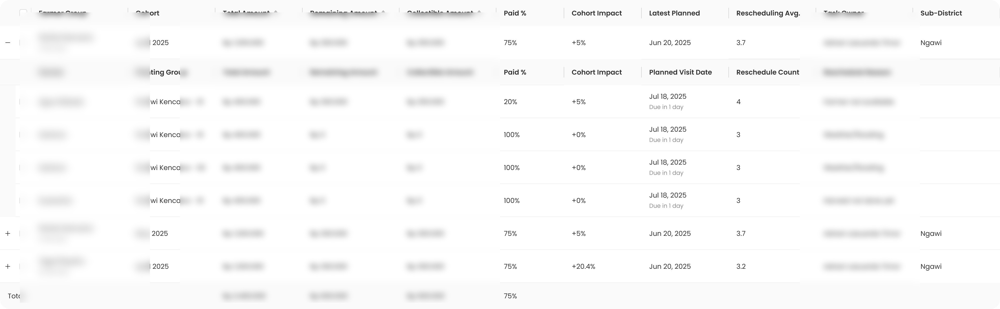

We used to find out about payment problems when it was already too late. I redesigned the collection system so we could see risk 190 days before payment is due — and act on it.
THE CONTEXT
The business model
Rize provides seeds and farming inputs to rice farmers on credit. Farmers don't pay upfront — they pay after harvest. The payment target is T+270 days (about 9 months after the planting season starts).
The north star metric
T+270 = 90% collection rate. This means: by 270 days after the season starts, we should have collected 90% of what farmers owe. This is the number that keeps the business alive.
The scale
~9,000 farmers across Indonesia and Vietnam, managed by 41 agronomists. Each agronomist handles hundreds of farmers in their territory.
THE PROBLEM
The old collection process was completely reactive. Here's what that looked like:
Day 1 to Day 119
Seeds go out, farmer plants, crop grows. We have no visibility. No system to track what's happening in the field. We hope things go well.
Day 120 — surprise
Invoice is due. Now we discover: "Oh, this farmer's crop failed 2 months ago." Or: "This farmer replanted and harvest is delayed." Too late to restructure, too late to plan. The money is already lost.
The core problem: We were managing collection like a billing system — send invoice, wait, hope. But farming isn't predictable. Crops fail, floods happen, pests attack. If you don't build a system that accounts for that reality, you'll always be surprised.
THE INSIGHT
At DAP 80 (80 Days After Planting), the rice crop is mature enough that an agronomist can estimate the harvest yield. This is roughly 190 days before payment is due.
DAP 80
Harvest prediction possible
190 days
Time to act
T+270
Payment due
The shift: Don't wait for the fire — smell the smoke. If we capture harvest information at DAP 80, we have 190 days to plan, restructure, or intervene. That's the difference between a write-off and a recovery.
WHAT I BUILT
At DAP 80, the agronomist visits each farmer group for a pre-harvest meeting. They collect: estimated harvest date, expected yield, and payment commitment. This is the trigger — the moment we go from "hoping" to "knowing."
If everything is on track: Farmer confirms harvest date and payment → goes into the happy path → we collect after harvest.
If there's a problem: Replanting, failed harvest, flood, pest — the agronomist reports it immediately and proposes restructuring.
When a farmer can't pay in full, the agronomist doesn't just flag it — they propose a restructuring plan directly from the app. The payment gets split into installment (installments) that the farmer can actually manage.
Why agronomists, not a central team? Because the agronomist is the one who visited the field, saw the damaged crop, talked to the farmer. They have the context. Centralizing that decision would be slower and less accurate.
Territory Managers (leaders of agronomists) need to see the big picture. Cohortly is a planning dashboard that shows all farmer cohorts by month — which are on track, which are behind, and where to focus effort.
The key columns: Paid %, Cohort Impact (how much this group affects the overall target), and milestone checkpoints at T+120, T+150, T+180 — so managers can spot problems long before T+270.
PRODUCT GLIMPSES
Some data has been blurred for confidentiality.


EDGE CASES
What if the farmer lies about their harvest?
The agronomist physically visits the field at DAP 80. They can see the crop condition. The pre-harvest meeting isn't a phone call — it's an on-site inspection with data collection.
What if there's a natural disaster after DAP 80?
The system handles this with the restructuring flow. The agronomist reports the new situation and proposes a new plan. The point isn't to predict everything perfectly — it's to have a system that can respond fast.
What if a Territory Manager has too many at-risk farmers?
That's exactly what Cohortly solves. The Cohort Impact column shows which farmer groups have the biggest effect on the overall target. The TM can prioritize visits to high-impact groups first instead of treating everyone equally.
What if a farmer in installment stops paying?
The dashboard tracks reschedule count per farmer. If someone keeps rescheduling, that's visible data — the TM can escalate or visit in person. The system makes problems visible, not invisible.
WHAT I LEARNED
Reactive systems cost more than proactive ones. Every late discovery is a potential write-off. Building an early warning system is an investment, not a cost.
Trust the field, not the spreadsheet. The best data comes from the person standing in the rice field, not from someone in an office reading reports.
Installments beat write-offs. When someone can't pay 100%, don't write off 100%. Give them a way to pay 60%, 70%, 80% — that's recovery, not loss.
Make risk visible. The biggest risk isn't a farmer who can't pay — it's a farmer who can't pay and nobody knows about it until it's too late.